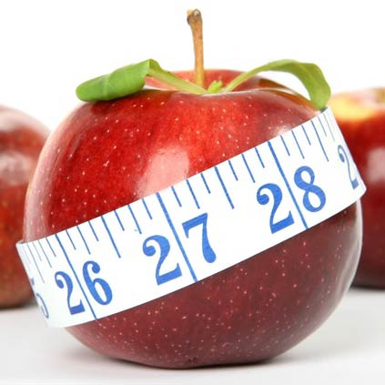

<!--
  Generated template for the AdmDietasPage page.

  See http://ionicframework.com/docs/components/#navigation for more info on
  Ionic pages and navigation.
-->
<ion-header>

  <ion-navbar color="normal">
    <ion-title>Dieta para {{nombre}}</ion-title>
    <ion-buttons end>
      <button ion-button icon-only color="royal" (click)="crear()">
        <ion-icon name="md-add"></ion-icon>
      </button>
    </ion-buttons>
  </ion-navbar>
  
</ion-header>


<ion-content >
  <ion-list>
    <div *ngIf="list.length!=0;else elseBlock">
      <ion-item-sliding  *ngFor="let item of list">
        <ion-item color="carts"  (click)="verdetalle(item)">
            <ion-thumbnail item-start>
                
                <ng-template #elseBlock>
                    
              </ng-template>
            </ion-thumbnail>
            <h2>{{item.nombre}}</h2>
            <p>{{item.tipo}}</p>
            <p>{{item.descorta}}</p>
            <button ion-button clear item-end icon-only>
              <ion-icon color="dark" name='ios-arrow-forward'></ion-icon>
          </button>
          </ion-item>
          <ion-item-options >
              
              <button ion-button color="tabss" (click)="editar(item)" icon-start>
                <ion-icon name="paper"> </ion-icon>
                Modificar
              </button>
              <!--
              <button ion-button color="tabss" (click)="eliminar(item.key)" icon-start>
                <ion-icon name="trash"></ion-icon>
                Eliminar
              </button>
              -->

              
          </ion-item-options>
        </ion-item-sliding>
    </div>
    <ng-template #elseBlock>
        <ion-item color="carts">
          <h2>No tiene ningun dietas</h2>
        </ion-item>
    </ng-template>
  </ion-list>
</ion-content>
